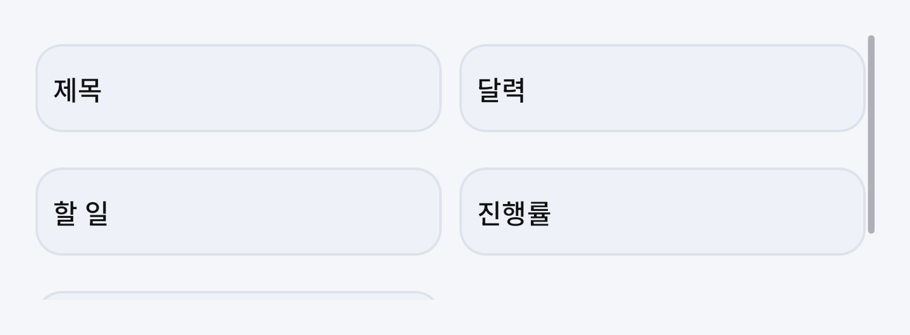
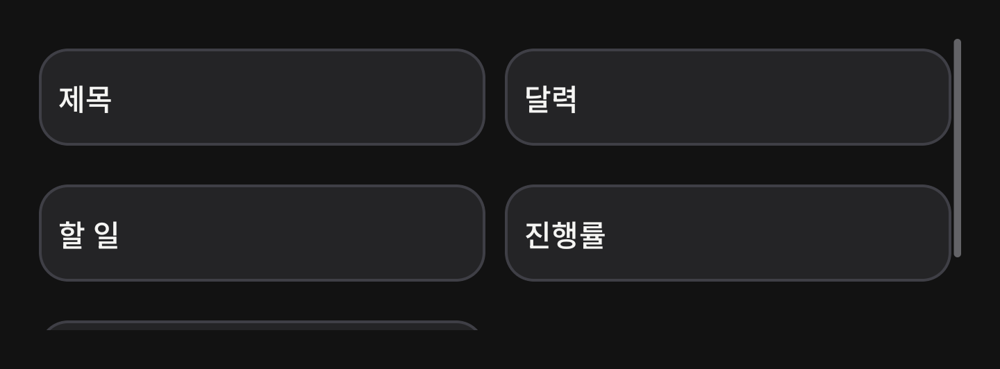

StudioBlockChoiceGrid
미선택 인스펙터에서 기존 블록을 2열로 탐색합니다.
- 컴포넌트 ID
studio-block-choice-grid- 분류
- 선택
- 구현
StudioBlockChoiceGrid·MyWidget/app/src/main/java/com/mywidget/editor/core/designsystem/component/StudioSelectors.kt:132- 주요 API
- items, modifier, itemContent
- 지원 상태
- 목록 비어 있음
- 홀수 행
- 스크롤 가능
- 변형
- 2열 균등 배치
- 크기
- 간격 8dp
- 스크롤 높이 최대 120dp
- 테마·토큰
- StudioInspectorDefaults
- studioScrollIndicator
- 접근성·사용 규칙
- 개별 칩에 접근성 이름과 동작을 둡니다. 세로 스크롤 동작을 제공합니다.
- 공통 사용 여부
- 텍스트·데이터·모양 도구의 블록 미선택 영역에서 사용
- 설계 품질
- 중첩 스크롤 제약과 마지막 행의 반폭을 보장함
- 판단
- 유지
- 판단 근거
- 레이어 순서 편집과 블록 빠른 선택은 목적이 다릅니다.
- 구현·문서
- 현재 소스 위치와 심볼 확인
- 렌더링
- 네이티브 캡처 있음
코드 예시
StudioBlockChoiceGrid(listOf("제목", "달력", "할 일", "진행률", "아이콘")) { label ->
StudioBlockChoiceChip(label, onClick = {})
}Android 네이티브 예시
아래 캡처에 표시된 상태와 기기 조건을 확인했습니다.

411 × 891 dp · 560 dpi · 글꼴 1배 · API 35 · ko-KR
캡처 기준 HEAD
ff118cc8d · 소스 지문 73da2a0be891 · 2026-11-13T10:23:11.274577Z
411 × 891 dp · 560 dpi · 글꼴 1배 · API 35 · ko-KR
캡처 기준 HEAD
ff118cc8d · 소스 지문 73da2a0be891 · 2026-11-13T10:23:11.274577Z